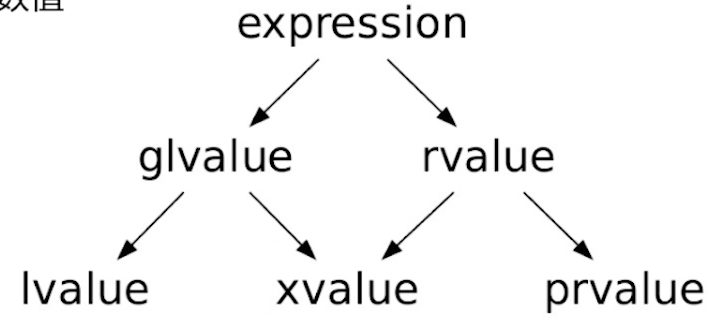

表达式基础
- 操作符
- 操作符优先级
- 操作符重载：不改变接收操作数的个数、优先级与结合性
- 操作数求值顺序的不确定性
void fun(int p1, int p2) { std::cout << p1 << " " << p2 << std::endl; } int main() { int x = 0; fun(x = x + 1, x = x + 1); // 前面的x = x + 1和后面的x = x + 1谁先执行是不确定的 /*第一种可能的执行顺序 * x = x + 1 * x = x + 1 * p1 = x * p2 = x * 打印结果 2 2 */ /*第二种可能的执行顺序 * x = x + 1 * p1 = x * x = x + 1 * p2 = x * 打印结果 1 2 */ }- 乱序执行的目的是为了效率
int a = 1; int b = 2; a = 3; b = 4; // 上面这段代码，编译器在编译的时候可能会把b = 4;放到a = 3;前面一行去执行，这样的话cache命中率更高，效率更高
- 乱序执行的目的是为了效率
- 左值&右值
- 传统的左值与右值划分
- 来源于C语言：左值可以放在等号左边；右值只能放在等号右边。
- 所有的划分都是针对表达式的，不是针对对象或者数值
- cppreference链接

- 泛左值(glvalue): 标识一个对象、位域或函数
- 纯右值(prvalue): 用于初始化对象或作为操作数
int x = 3; // 这是个初始化操作，不是个表达式，这里的的3是个纯右值（用于初始化对象） x = 4; // 这是个表达式，这里的x是个泛左值，3是个纯右值 - 将亡值(xvalue): 标识其资源可以被重新使用
void fun(std::vector<int>&& input) {} int main() { std::vector<int> x; fun(std::move(x)); // move操作把x转换为一个将亡值 }
- 在C++中，左值也不一定能放在等号左边；右值也可能放在等号左边
const int x = 3; // x是个泛左值，因为它标识了一个对象（一块内存）；x不是将亡值；所以x是个左值（根据上面的图推断） x = 4; // 虽然x是左值，但是它不能放在等号左边 struct Str {}; Str() = str(); // 编译可以通过，所以右值可以放在等号左边 - 遍历容器时使用右值引用
std::vector<bool> vec{false, true}; for (const auto& x : vec) { // 编译通过 // ... } for (auto& x : vec) { // 编译报错，vector<bool>的内存空间为节约存储空间是按照bit存储的 // 此时vec中的元素是std::vector< bool>:reference类型，不是左值无法引用获取 // 改成auto&& x : vec是可以的，为了不失一般性，遍历vector的时候就用右值引用即可 // ... } - 左值与右值的转换
- 左值转换为右值
int x = 3; int y = x; // 这里y需要的是右值，所以C++会把x转换为右值用于y的初始化 - 临时具体化
struct Str { int x; }; int main() { Str().x; // 这里我们需要把Str()从一个纯右值转换为将亡值才能拿到x }
- 左值转换为右值
- 再讨论decltype
-
如果实参为无括号的标识表达式或者无括号的类成员访问表达式，则decltype产生以此表达式命名的实体的类型。
int x; decltype(x) y = x; // int y = x; -
如果实参是其他类型为T的表达式
- 如果表达式的值类别为亡值，decltype产生T&&
- 如果表达式的值类别为左值，decltype产生T&
- 如果表达式的值类别为纯右值，decltype产生T
decltype(3) x; // int x; int x; decltype((x)) y = x; // int& y = x; // 注意，x两侧没有括号的话就是实体了，加了括号就是表达式了 decltype(std::move(x)) y = std::move(x); // int&& y = std::move(x);
-
- 传统的左值与右值划分
- 类型转换
- 隐式类型转换
- 自动发生
- 实际上是一个（有限长度的转型序列）
- 显式类型转换
- static_cast
- static意味着转换是在编译期完成的
- 性能好，但安全性不高
- const_cast
- 去除常量性
- dynamic_cast
- dynamic意味着转换是在运行期执行的，如果转换失败会返回nullptr
- 相比static_cast更加：安全，但性能较差
- 一般用于子类和父类的转换
- 上行转换
- 在继承关系中 ，dynamic_cast由继承类向基类的转换与static_cast和隐式转换一样，都是非常安全的。
- 下行转换
class A { virtual void f(){}; }; class B : public A{ }; void main() { A* pA = new B; B* pB = dynamic_cast<B*>(pA); }- 注意类A和类B中定义了一个虚函数，这是不可缺少的。因为类中存在虚函数，说明它可能有继承类，这样才有类型转换的情况发生，由于运行时类型检查需要运行时类型信息，而这个信息存储在类的虚函数表中，只有定义了虚函数的类才有虚函数表。
- 上行转换
- reinterpret_cast
- 字面意思就是重新解释一块内存
- 一般是对指针指向的内存进行操作
int x = 3; double y = reinterpret_cast<doule>(x); // 编译不通过，不支持这种转换操作 double* y = reinterpret_cast<double*>(&x); // 编译通过，但每次打出来的值都没啥意义，且在变化 // 因为int是4个字节，double是8个字节 // 每次执行的时候，后4个字节都在变化
- C风格转换(不建议使用)
int x = 3; auto y = (double)x; - 还有其他类型的转换，但是用的不多，所以不赘述了
- static_cast
- 隐式类型转换
表达式深入
- 逻辑与关系操作符
- <=>的返回类型
- strong_ordering
- weak_ordering
- partial_ordering
- 通常不能将多个关系操作符串联：c > b > a是不行的
- 不要写出val == true这样的代码
- 编译器会把true隐式转换为1来进行比较
- <=>的返回类型
- 位操作符
- 移位操作符
- >>就是除以2
- «就是乘以2
- 注意整数的符号与位操作符的相关影响
- integral promotion会根据整数的符号影响其结果
unsigned char x = 0xff; // 11111111 auto y = ~x; // 首先会将x整型提升为00...011111111(int型)，然后再按位取反(int)11...100000000，结果是-256 signed char x = 0xff; // 11111111，由于是signed类型，所以其第一位是符号位 // 整型提升前后数值大小不变，所以这里在进行整型提升的时候，前面就是补符号位的1了 // (signed char)11111111 = (int)11...111111111 = -1 auto y = ~x; // 按位取反(int)00...000000000，结果就是0 - 右移保持符号，但左移不能保证
- integral promotion会根据整数的符号影响其结果
- 移位操作符
- 赋值操作符
- 右结合
- 求值结果为左操作数
- 可以引入大括号（初始化列表）以防止收缩转换(narrowing conversion)
short x; x = 0x80000000; // 编译不会报错，但是short占2个字节，赋值结果是4个字节，这里会丢掉前面两个字节的数据，结果是x = 0 x = {0x80000000}; // 加了{}后，如果编译器发现收缩转换发生了，会报错 int y = 3; short x = {y}; // 报错，编译器觉得这里有收缩转换风险，因为y的值不确定，虽然实际上没有发生收缩转换 constexpr int y = 3; short x = {y}; // 通过，编译器直接把y替换为3，然后就发现没有发生收缩转换 - 复合赋值操作符
int x = 2; int y = 3; x^=y^=x^=y; // x = 3; y = 2; 两者内容互换，省了一块内存，但运行效率较低 // 0: x = 2, y = 3; // 1: x^=y(从最右边算起) x = 2^3, y = 3; // 2: y^=x x = 2^3, y = 3^2^3 = 3^3^2 = 0^2 = 2 // 3: x^=y x = 2^3^2 = 3, y = 2
- 自增自减操作符
int x = 3; ++++x; // 合法，因为前缀++返回的是左值 (x++)++; // 不合法，后缀++返回的是右值